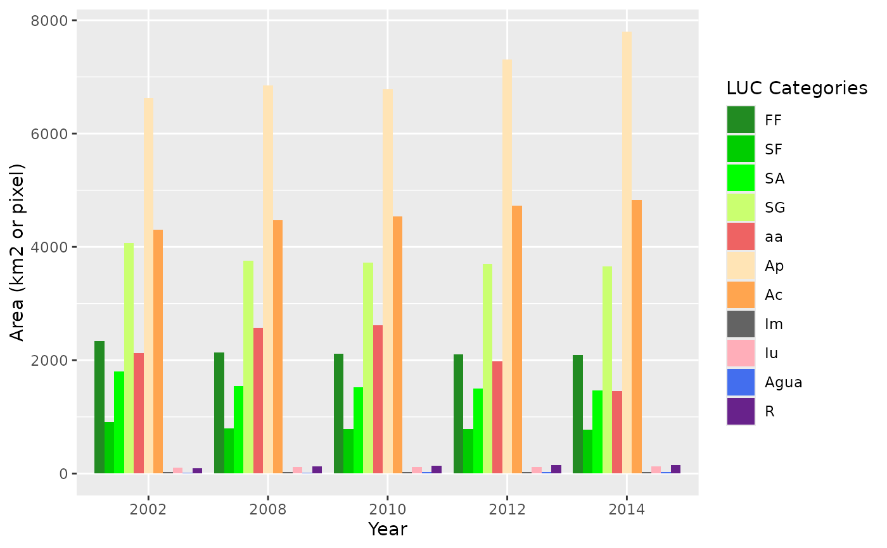

A grouped barplot representing the areas of LUC categories at each time point of the analysed period.
barplotLand( dataset, legendtable, title = NULL, caption = "LUC Categories", xlab = "Year", ylab = "Area (km2 or pixel)", area_km2 = TRUE, ... )
| dataset | A table of the multi step transitions ( |
|---|---|
| legendtable | A table containing the LUC legend items and their respective
color ( |
| title | character. The title of the plot. |
| caption | character. The caption of the plot. |
| xlab | character. Label for the x axis. |
| ylab | character. Label for the y axis. |
| area_km2 | logical. If TRUE the change is computed in km2, if FALSE in pixel counts. |
| ... | additional themes parameters, see |
a barplot
ggplot2::theme
# editing the category names SL_2002_2014$tb_legend$categoryName <- factor(c("Ap", "FF", "SA", "SG", "aa", "SF", "Agua", "Iu", "Ac", "R", "Im"), levels = c("FF", "SF", "SA", "SG", "aa", "Ap", "Ac", "Im", "Iu", "Agua", "R")) SL_2002_2014$tb_legend$color <- c("#FFE4B5", "#228B22", "#00FF00", "#CAFF70", "#EE6363", "#00CD00", "#436EEE", "#FFAEB9", "#FFA54F", "#68228B", "#636363") # the plot barplotLand(dataset = SL_2002_2014$lulc_Multistep, legendtable = SL_2002_2014$tb_legend, area_km2 = TRUE) 